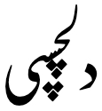

This page gathers together basic information about the Arabic script and its use for the Urdu language. It aims (generally) to provide an overview of the orthography and typographic features, and (specifically) to advise how to write Urdu using Unicode.
See the Arabic page for most of the information about how the Arabic script works, and the orthography used for the Arabic language. This page aims to provide Urdu-specific information.
See also the companion document, Arabic character notes, for detailed information about specific Unicode characters.
Phonetic transcriptions on this page should be treated as an approximate guide, only. Many are more phonemic than phonetic, and there may be variations depending on the source of the transcription.
Select part of this sample text to show a list of characters, with links to more details.
دفعہ ۱۔
تمام انسان آزاد اور حقوق و عزت کے اعتبار سے برابر پیدا ہوئے ہیں۔ انہیں ضمیر اور عقل ودیعت ہوئی ہے۔ اس لئے انہیں ایک دوسرے کے ساتھ بھائی چارے کا سلوک کرنا چاہیئے۔
دفعہ ۲۔
ہر شخص ان تمام آزادیوں اور حقوق کا مستحق ہے جو اس اعلان میں بیان کئے گئے ہیں، اور اس حق پر نسل، رنگ، جنس، زبان، مذہب اور سیاسی تفریق کا یا کسی قسم کے عقیدے، قوم، معاشرے، دولت یا خاندانی حیثیت وغیرہ کا کوئی اثر نہ پڑے گا۔
اس کے علاوہ جس علاقے یا ملک سے جو شخص تعلق رکھتا ہے اس کی سیاسی کیفیت دائرہ اختیار یا بین الاقوامی حیثیت کی بنا پر اس سے کوئی امتیازی سلوک نہیں کیا جائے گا۔ چاہے وہ ملک یا علاقہ آزاد ہو یا تولیتی ہو یا غیر مختار ہو یا سیاسی اقتدار کے لحاظ سے کسی دوسری بندش کا پابند ہو۔
The Urdu alphabet is the right-to-left alphabet used for the Urdu language. It is a modification of the Persian alphabet known as Perso-Arabic, which is itself a derivative of the Arabic alphabet. The Urdu alphabet has up to 58 letters. With 39 basic letters and no distinct letter cases, the Urdu alphabet is typically written in the calligraphic Nastaʿlīq script, whereas Arabic is more commonly in the Naskh style. ...
The Nastaʿlīq calligraphic writing style began as a Persian mixture of scripts Naskh and Ta'liq. After the Mughal conquest, Nasta'liq became the preferred writing style for Urdu. It is the dominant style in Pakistan, and many Urdu writers elsewhere in the world use it. Nastaʿlīq is more cursive and flowing than its Naskh counterpart.
Urdu uses the Arabic script, with extensions to covers its much wider repertoire of sounds. A number of the extensions are based on those developed for Persian (Farsi). The Arabic script is an abjad. This means that in normal use the script represents only consonant and long vowel sounds. See the table to the right for a brief overview of features for the modern Urdu orthography.
(See the key. Character counts exclude ASCII characters.)
Some of the consonant
characters double as long vowels (eg. ی and و). The vowels are not usually clearly defined, but when
necessary, vowel information can be represented by combining marks appearing above or below the base consonant. The absence of a vowel and doubling
of consonants can be indicated in the same way.
The alphabet includes aspirated letters that have to be composed with two Unicode characters and a je letter that uses different Unicode characters depending on the context.
Although it is not always easy to guess the vowel sounds in a word, the consonants are largely reliable phonetically. There is mostly a one-to-one correspondance between letters and sounds.
Text direction
Urdu is written horizontally and right-to-left in the main, but (as with most RTL scripts) numbers and embedded LTR script text are written left-to-right (producing 'bidirectional' text).
رکھتا ہے اور 2009ء میں UEFA کپ کے
Urdu words are read right-to-left, starting from the right of this line, but numbers and Latin text are read left-to-right.
The Unicode Bidirectional Algorithm automatically takes care of the ordering for all the text in fig_uefa, as long as the 'base direction' is set to RTL. In HTML this can be set using the dir attribute, or in plain text using formatting controls.
If the base direction is not set appropriately, the directional runs will be ordered incorrectly as shown in fig_bidi_no_base_direction.
رکھتا ہے اور 2009ء میں UEFA کپ کے
رکھتا ہے اور 2009ء میں UEFA کپ کے
The exact same sequence of characters with the base direction set to RTL (top), and with no base direction set on this LTR page (bottom).
Unicode provides a set of 10 formatting characters that can be used to control the direction of text when displayed. These characters have no visual form in the rendered text, however text editing applications may have a way to show their location.
More recently, the Unicode Standard added a set of characters which do the same thing but also isolate the content from surrounding characters, in order to avoid spillover effects. They are RLI [U+2067 RIGHT-TO-LEFT ISOLATE], LRI [U+2066 LEFT-TO-RIGHT ISOLATE], and PDI [U+2069 POP DIRECTIONAL ISOLATE]. The Unicode Standard recommends that these be used instead, however some applications don't yet recognise them.
There is also FSI [U+2068 FIRST STRONG ISOLATE], used initially to set the base direction according to the first recognised strongly-directional character.
A sequence of numbers separated by hyphens (for example a range) runs from right to left in Urdu.
fig_range shows some Urdu text, which is right-to-left overall, containing a numeric range that is also ordered RTL, ie. it starts with 100 and ends with 999.
100–999 تصدیق شدہ کیس
A numeric range in Urdu language text.
When a list uses the ASCII hyphen as a separator, the Unicode Bidirectional Algorithm automatically produces the expected ordering only when a sequence or expression follows Urdu characters. However, a sequence that appears alone on a line will be ordered left-to-right. To make the sequence read right-to-left you should, in this case, add the formatting character U+061C ARABIC LETTER MARK (ALM) at the start of the line (see and click on each line in fig_ALM).
10-01-2018
10-01-2018
A numeric date alone on a line of RTL text, with ALM before it (top), and without (bottom). (Click on each line to see the code points.)
Note that the required order cannot be achieved by simply setting the base direction, nor by using U+200F RIGHT-TO-LEFT MARK.
Alternatively, you could use a different separator, such as – [U+2013 EN DASH] (as in fig_range) or ‐ [U+2010 HYPHEN]. No special arrangements are then necessary.
Similar RTL ordering is applied to numbers in equations, such as 1 + 2 = 3, for Urdu language text.
There are 10 vowel sounds, though there are also allophonic variants. They are usually grouped into pairs of 'short' and 'long' sounds - although the difference is qualitative, rather than just length. The basic phonemes are as follows:
Click on the sounds to reveal locations in this document where they are mentioned.
Sourcewp. Phones in a lighter colour are non-native or allophones.
The phoneme ə is often written a in phonemic transcriptions. Its pronunciation may also be slightly lower as far down as ɐ, so it is shown slightly lower than normal on the chart.
iː and uː in word-final position are typically shortened to i and u, eg. شَکتی and وَستُو.wp
Where ɦ has inherent vowels on either side, those vowels may become ɛ, eg. کَہنا. A similar process occurs for word-final ɦ, eg. کَہہwp
Urdu follows Arabic in using diacritics to express short vowel sounds, but also rarely uses them in normal text. Given the extra phonetic sounds in Urdu, compared to Arabic, the way characters are used to express vowels is much more complicated.
The following tables show how the above vowel sounds map to common characters or sequences of characters in vowelled text. The sections that follow this provide additional information. The table shows initial (i), medial (m), and final (f) forms. The three short vowels are not typically found in final position.
When text is unvowelled (as it usually is), there are far fewer ways of writing vowels than shown in the previous section, and more ambiguity about which sound is represented by a letter.
This table shows the available permutations and their mappings. (The table should be read right-to-left.)
final
medial
initial
ɑː
ا
ɑː
ا
əɪʊ
ا
ɑː
آ
iː
ـی
eːiːɛː
ـیـ
eːiːɛː
ایـ
eːɛː
ے
oːuːɔː
و
oːuːɔː
و
oːuːɔː
او
The vowels əɪʊ are not marked in medial position, and generally do not occur in final position.
Vowel diacritics
The set of diacritics used for vowels is as follows.
َ␣ً␣ُ␣ٌ␣ِ␣ٍ␣ْ␣ٗ␣ٓ␣ٰ␣ٖ␣٘
'ain
The letter ع[U+0639 ARABIC LETTER AIN] is used in words of Arabic origin. In these words it is typically not pronounced but can support vowels. In this way, at the beginning of a word it can fulfill the same function as the alif, eg. عَرب. The Urdu word اَرَب, though pronounced the same, becomes a completely different word by its spelling. Note, in particular, that the equivalent of آ[U+0622 ARABIC LETTER ALEF WITH MADDA ABOVE]ɑː is عا, as in عادت.
A following ع may also affect a short vowel diacritic to produce a long vowel sound as follows:
The similar diacritic ◌ٖ [U+0656 ARABIC SUBSCRIPT ALEF] is used to indicate that a vowel is iː or i rather than e, eg. نُحْیٖnuh͓yᵢ. This diacritic is not usually needed, and serves only to emphasise that this is a vowel.
◌ٗ [U+0657 ARABIC INVERTED DAMMA] is used to indicate that the vowel is uː or ʊ rather than ɔ, eg. حبل حلالہٗhbl hlɑlḫᵘ. It is not usually needed, and serves only to emphasise that this is a vowel.
The doubled vowel diacritics, ◌ً [U+064B ARABIC FATHATAN], ◌ٌ [U+064C ARABIC DAMMATAN], and ◌ٍ [U+064D ARABIC KASRATAN] are used at the ends of certain Arabic adverbs. The doubled zabar (fathatan) is the most common of the three marks of this type, and is usually written over an alif, although the vowel sound is short. Examples, یقیناًyqynɑaⁿyakiːnancertainly; مثلاًmṡlɑaⁿmasalanfor example.
Nasalisation
Vowels may be nasalised, like at the end of the French word élan. This is indicated in Urdu by a glyph called nun ghunna that looks like the letter nun except that in word final position it has no dot, eg. ماں, ٹاںگ, and کروں. In Unicode there are different characters for each of these uses.
The diacritic◌٘ [U+0658 ARABIC MARK NOON GHUNNA] is used when people want to make it clear that a noon character represents nasalisation rather than the sound n, eg. ٹاںگ. It is not used in a standard way, just when the user prefers, and is fairly uncommon.
Vowel junctions
A hamzā plays more than one role in Urdu. One such role is to indicate the boundaries between
vowel sounds when there is no intervening consonant. Depending on the vowels concerned, it is used in a number of different ways. It can also have
two different shapes, one like the initial form of 'ain and the other more like an italic 's'.
In this example we see hamza in its isolated form, انشاءﷲɪnʃalːɑːGod willing.
The short vowel ɪ as a second vowel is also represented by hamzā 'on its chair' alone,
eg. کوئلہ;
لائن.
When the second vowel is an uː or o represented by و[U+0648 ARABIC LETTER WAW], the hamzā typically sits directly on top of the و, eg. آؤ; جاؤں. Note that often the hamzā is omitted in this situation. To represent this in Unicode use ؤ[U+0624 ARABIC LETTER WAW WITH HAMZA ABOVE].
Many words have the vowel combinations iːɑ̃ iːe iːo, where hamzā is not typically
used, eg. لڑکیاں;
چلیے;
لڑکیوں کا.
Hamzā is also used to represent izāfat when the preceding word ends in either
choṭī he or ye (see below).
Izāfat
Izāfatɪzɑːfat is the name given to the short vowel ɛ used to describe a
relationship between two words. It may be translated of, eg. as in the Lion of Punjab.
This sound occurs at the end of a word and is mostly represented using zer. Sometimes the combining mark is not shown, even though
pronounced. Examples: شیرِ پنجاب; طالبِ علم.
If ہ[U+06C1 ARABIC LETTER HEH GOAL] (choṭī he) is pronounced at the end of a word, then zer is used, eg. براہِ راست. However, when the preceding word ends in
a silentchoṭī he izafat is represented by a combining hamza, eg. درجۂ حرارت or قطرۂ آب. Normally, you would write this using the precomposed character ۂ [U+06C2 ARABIC LETTER HEH GOAL WITH HAMZA ABOVE].
Click on the sounds to reveal locations in this document where they are mentioned.
labial
dental
alveolar
post-
alveolar
retroflex
palatal
velar
uvular
glottal
stop
pb pʰbʱ
td tʰdʱ
ʈɖ ʈʰɖʱ
kɡ kʰɡʱ
q
ʔ
affricate
t͡ʃd͡ʒ t͡ʃʰd͡ʒʱ
fricative
fv
sz
ʃ
ʂ
xɣ
hɦ
nasal
m
n
ɳ
ɲ
ŋ
approximant
ʋw
l
j
trill/flap
rɾ
ɽɽʱ
Sourcewp. Phones in a lighter colour are non-native or allophones.
Urdu, like other Indic languages, has four forms of plosives, illustrated here with the bilabial stop: unvoiced p, voiced b, aspirated pʰ, and murmured bʱ. It also has a set of retroflex consonants.
v and w are allophones of ʋ in Urdu. w typically occurs between a consonant and vowel, eg. پکوان. Compare with ورت.wp
The alphabet standardised in 2004 by the National Language Authority in Pakistan counts 39 letters, and 18 digraphs representing aspirated consonants. Follow the links to the character notes for the letters described below to find examples and detailed information.
There are 3 letters for s, and 4 for z, due the retention of Arabic spelling for words of Arabic origin. The most common letter for s is س [U+0633 ARABIC LETTER SEEN], and for z is ز [U+0632 ARABIC LETTER ZAIN].
Aspirated consonants
پھ␣بھ␣تھ␣دھ␣ٹھ␣ڈھ␣کھ␣گھچھ␣جھوھ␣هھمھ␣نھرھ␣ڑھ␣لھ␣یھ
Other
Other characters found in Urdu text include the following. These are introduced further down this page, but you can, as usual, find out more by clicking on the code point links.
The absence of a vowel sound can be indicated with the diacritic ْ[U+0652 ARABIC SUKUN], called sukūn or jazm, although this diacritic is not normally shown in text, eg. سَخْت.
It has various possible forms, including a small round circle, something that looks like peʃ, and something like a circumflex, see fig_sukun.
Two alternative shapes of sukun.
This diacritic is never written above the final character in a word, mainly because as a rule a short vowel is not pronounced in this position.
Consonant lengthening & gemination
Most native consonants may be lengthened, but not bʱ, ɽ, ɽʱ, or ɦ. Geminate consonants are always medial and preceded by one of ə, ɪ, or ʊ.wp
In vowelled text, which is very rare, this is shown using the diacritic ّ[U+0651 ARABIC SHADDA], called taʃdiːd, eg. ستّر. More often than not, this is not written.
Arabic definite article
The pronunciation of ال (alif followed by lām) varies when it represents the Arabic definite article. This affects many words in Urdu that have come from Arabic, in
particular names and adverbial expressions.
The lām is not pronounced if it precedes one of the following characters:
ت␣ث␣د␣ذ␣ر␣ز␣س␣ش␣ص␣ض␣ط␣ظ␣ل␣ن
Instead, the following sound is doubled. A tašdīd may sometimes be
used to indicate this. Example: السلام علیکم.
Often the alif is not pronounced after a short preceding word that ends in a vowel. If the preceding vowel
was long, it is shortened in this process. Examples: بالکل; فی الحال.
Often the vowel is pronounced ʊ, eg. دارالحکومت.
Combining characters
Vowel diacritics
The following diacritics used to express vowels are mostly described in vowelsummary.
The remaining combining characters are used with names as honorifics, eg. قاضی نور محمّدؒqɑẑy nvr mhmᵚdؒkaziː nur mamed rahmatulla alayheQazi Nur Muhammad, may God have mercy upon him!. They are combining characters that appear over the name at a point chosen by the author.
ؔ␣ؓ␣ؒ␣ؑ␣ؐ
Numbers
Urdu may use ASCII digits, or may use the extended arabic-indic digits in the Arabic block.
۰␣۱␣۲␣۳␣۴␣۵␣۶␣۷␣۸␣۹
This is a separate set of characters from those used for Arabic, to accommodate different shaping and directional behaviour. Shapes differ from those of Arabic for the digits 4, 5, and 7.
Persian also uses the same characters for digits, but there are some systematic shape differences between Persian and Urdu for the digits 4, 6, and 7.
Urdu
۰۱۲۳۴۵۶۷۸۹
Persian
۰۱۲۳۴۵۶۷۸۹
Arabic
٠١٢٣٤٥٦٧٨٩
Comparison of digit shapes in Urdu, Persian and Arabic.
Observation:Wikipedia uses an ASCII percent sign with ASCII digits
۵٬۴۳۲٫۱٪
The figure 5,432.1% using Urdu characters.
The percent sign is typed and stored after the numbers. Like the numeric sequences using the ASCII hyphen (mentioned in expressions), it will appear to the left of a number if that number is preceded by Urdu characters. However, if the percentage appears alone or at the beginning of a line it is necessary to use an ALM formatting character just before it to prevent the sign appearing on the right.
Number sign
Urdu has a sign [U+0600 ARABIC NUMBER SIGN] which can be used to indicate a number. As shown in fig_number_sign, its length varies with the number of digits in the number.
The Arabic number sign runs below the numbers it is used with.
To use this sign, type it before the digits. Even though it displays beneath the digits, it is a formatting character, and not a combining mark.
Dates
Dates in Urdu may be based on the Gregorian calendar or the Hijri calendar. Dates in the Gregorian calendar are followed with the word عیسویʿysvyiːsviːChristian Era – usually rendered by the abbreviation ء [U+0621 ARABIC LETTER HAMZA]. Dates using the Muslim calendar are followed by the word ہجریḫʤryhɪʤriː – abbreviated as ھ [U+06BE ARABIC LETTER HEH DOACHASHMEE].
یکم جمادی الاول 1423 ھ
An Urdu date (12 July 2002) in the Hijri calendar.
Dates may also be indicated by placing the long sweep of [U+0601 ARABIC SIGN SANAH] below the year digits.
An Urdu date (2014), with a SANAH sign running below it, and a hamza to indicate the Gregorian calendar.
Like the number sign, SANAH is typed before the digits (see fig_sanah). It is not a combining character, even though it displays beneath the digits. The length of the symbol may vary according to the number of digits. It is terminated by a non-digit character.
[U+0604 ARABIC SIGN SAMVAT] is another subtending mark, intended to indicate a year in the Śaka calendar.
This is one of the few characters in the presentation forms blocks that is valid for use in normal content.
﷽ [U+FDFD ARABIC LIGATURE BISMILLAH AR-RAHMAN AR-RAHEEM] is used by Muslims in various contexts including the constitutions of countries where Islam has a significant presence. The shape varies significantly from font to font and usage to usage.
Formatting characters
The Arabic script uses a number of Unicode characters that affect the way that other characters are rendered. Many of those have no visible form of their own. The following set of characters used in Urdu text does have a visual representation.
␣␣␣␣␣
Follow the links to learn more about each of these characters.
Observation: The subtending character display is broken in the Noto Nastaliq Urdu font. That font only produces the expected display if (a) a RTL override is applied to the characters, or (b) the SANAH is typed after the digits (in a RTL normal base direction, but not an override). The Awami Nastaliq font handles them as expected, as long as the sign precedes the digits and the base direction is set to RTL (but not if a directional override is applied).
Urdu text also makes use of a relatively large set of invisible formatting characters, especially in plain text, many of which are used to manage text direction (see directioncontrols), and others are used to control cursive shaping behaviour (see shapingcontrols).
Glyph shaping & positioning
Writing styles
Urdu is normally written in a nasta'liq writing style. Key features include a sloping baseline for joined letters, and overall complex shaping and positioning for base letters and diacritics alike. There are also distinctive shapes for many glyphs and ligatures.
مستحق • شخص • کیفیت
Sloping baselines and complex joining behaviours in Urdu nastaliq text.
This is achieved in Unicode by applying the correct font – the underlying characters used are not different for nasta'liq vs. other styles.
کوئی شخص محض حاکم کی مرضی پر اپنی قومیت سے محروم نہیں کیا جائے گا اور اس کو قومیت تبدیل کرنے کا حق دینے سے انکار نہ کیا جائے گا۔
Urdu is normally written in the nasta'liq writing style.
کوئی شخص محض حاکم کی مرضی پر اپنی قومیت سے محروم نہیں کیا جائے گا اور اس کو قومیت تبدیل کرنے کا حق دینے سے انکار نہ کیا جائے گا۔
The same text, written in a standard naskh writing style.
Not only does the baseline slope for connected glyphs in a word, but the sloping sequences can overlap, as shown in fig_overlap, which uses the Awami Nastaliq font.
Sloping baselines and complex joining behaviours in Urdu nastaliq text.
Cursive script
Arabic script joins letters together. Fonts need to produce the appropriate joining form for a code point, according to its visual context. This results in four different shapes for most letters (including an isolated shape). The highlights in fig_cursive below show the same letter, ع[U+0639 ARABIC LETTER AIN], with two different joining forms.
A few Arabic script letters only join on the right-hand side. For Urdu these include:
و␣د␣ڈ␣ذ␣ر␣ز␣ژ␣ڑ␣ا␣ے
There are 2 Unicode blocks containing Arabic presentation forms: these contain individual characters corresponding to the various joining forms and ligatures. With only a handful of exceptions, characters in those blocks should not be used for text content; they are only for managing legacy encodings. Instead, characters in the main Arabic block should be used, and the font will manage the necessary cursive shaping.
Managing glyph shaping
ZWJ [U+200D ZERO WIDTH JOINER] and ZWNJ [U+200C ZERO WIDTH NON-JOINER] are invisible formatting characters used to control the joining behaviour of cursive glyphs. They are particularly useful in educational contexts, but also have real world applications.
ZWJpermits a letter to form a cursive connection without a visible neighbour. It can be used for illustrating cursive joining forms, eg. ان س ان. Characters from the Presentation Forms blocks in Unicode should not be used in such cases.
ZWNJprevents two adjacent letters forming a cursive connection with each other when rendered, eg. انسان.
CGJ [U+034F COMBINING GRAPHEME JOINER] is used in Arabic to produce special ordering of diacritics. The name is a misnomer, as it is generally used to break the normal sequence of diacritics.
Font styles
tbd
Context-based shaping
Context-based shaping is everwhere in Urdu due to the combination of the cursive behaviour of the script plus the strong tendency to arrange joined characters in cascades or vertical arrangements.
As in Arabic, lam followed by alef ligates, eg. اسلام, and there are other such commonly ligated forms. There are also common rules about special joining arrangements when certain characters appear side by side, for example a KA followed by an ALEF takes the special shape کا.
Context-based positioning
Positioning of cursive joining forms is already complicated in the nastaliq style because of the vertical placement; adding dots and hamzas then complicates matters in that they need to be aligned with the appropriate base character without overlapping adjacent character glyphs or other dots, etc. Positioning vowel diacritics, shadda, etc. then adds to the complexity.
The table in fig_gpos selects just a handful of situations to illustrate the kinds of positioning that take place.
nastaliq
naskh
notes
A
حیثیت
حیثیت
A relatively straightforward arrangement, except for the positioning (and context-based shaping) required to achieve the sloping baseline.
B
ویکیپیڈیا
ویکیپیڈیا
Here, the dots have been arranged vertically so that they don't crash into each other. More radical arrangements of this kind will be seen in the following examples.
C
پیٹی اؔبِیجیل
A similar situation, where additional horizontal and vertical spacing has been applied in order to allow room for the dots and other diacritics to appear without crashing into other glyphs or dots, etc.
D
چاہیئے
چاہیئے
It is common for diacritics of characters preceding BAREE HEH to be rendered below the latter character's glyph. Here we see part of both an initial HEH and the 2 dots of aYEH separated from the other glyphs that make up those characters.
E
تصدیق
تصدیق
In this word, the 2 dots below the YEH create most of the horizontal space between the preceding DAL and following QAF. In the Nafees Nastaleeq font, the 2 dots are moved below and slightly under the QAF, reducing the overall horizontal with of the word.
F
اسلام
اسلام
Note the convention that the word-final MEEM here starts above the baseline, even though nothing follows it.
G

دلچسپی
A highly vertical arrangement using the Nafees Nastaleeq font, where dots are stacked together. (In the Awami and Noto nastaliq fonts this looks less vertical, ie. دلچسپی.)
Examples of glyph positioning in the nastaliq style.
Baselines & inline alignment
The alphabetic baseline is a strong feature of Arabic script on the whole, since characters tend to join there. The nastaliq style of the script, on the other hand, uses arrangements of joined glyphs that cascade downwards from right to left, and ressemble a strongly sloping baseline. See the examples in fig_baseline and fig_gpos.
fig_overlap shows overlapping baselines in the Nafees Nastaliq font. (In the Awami and Noto fonts, there is no overlap for that text.)
Structural boundaries & markers
Grapheme boundaries
tbd
Word boundaries
Words are separated by spaces.
Phrase boundaries
Urdu uses a mixture of western and arabic punctuation.
For separators at the sentence level and below, the following are used in Urdu text, where the right column indicates approximate equivalences to Latin script.
Urdu text using an Arabic comma, and an Arabic full stop.
In poetry, ؎ [U+060E ARABIC POETIC VERSE SIGN] is used to mark the beginning of poetic verse, and ؏ [U+060F ARABIC SIGN MISRA] is used to indicate a single line (misra) of a couplet (shayr) from an Urdu poem, when quoted in text. It is used at the beginning of the line, and is followed by the line of verse. For more information and examples, follow the links on the character names.
Bracketing & parentheses
tbd
Quotations
tbd
Emphasis
tbd
Abbreviation, ellipsis & repetition
tbd
Other punctuation
tbd
Inline notes & annotations
tbd
Line & paragraph layout
Line breaking & hyphenation
Basic line-break opportunities occur between the space-separated words.
They are not broken at the small gaps that appear where a character doesn't join on the left.
Breaking between Latin words
When a line break occurs in the middle of an embedded left-to-right sequence, the items in that sequence are rearranged visually so that the reading direction remains top-to-bottom. latin_line_breaks shows how two Latin words are apparently reordered in the flow of text to accommodate this rule.
Urdu with embedded Latin text. The lower of these two images shows the result of decreasing the line width, so that text wraps between a sequence of Latin words.
In digital text the rearrangement is automatic. Only the positions of the font glyphs are changed: nothing affects the order of the characters in memory.
Character properties
Characters used for the Urdu language have the following assignments related to line-break properties.
AL
45
پ ب ت ط د ٹ ڈ ك گ ق ء چ ج ف و س ث ص ذ ض ظ ش ژ خ غ ہ ح ھ ع م ن ں ر ڑ ل ی ے ا ک ه آ ؤ ئ ي ۂ
AL (ordinary alphabetic and symbol characters) requires other characters to provide break opportunities; otherwise, unless tailored rules are applied, no line breaks are allowed between pairs of them.
NU (number) behaves like ordinary characters (AL) in the context of most characters but activate the prefix and postfix behavior of prefix and postfix characters.
Hyphenation
tbd
Text alignment & justification
tbd
Letter spacing
tbd
Counters, lists, etc.
tbd
Styling initials
tbd
Page & book layout
General page layout & progression
tbd
Grids & tables
tbd
Notes, footnotes, etc
[U+0602 ARABIC FOOTNOTE MARKER] is used to indicate that a number is a reference to a footnote. The number sits above the symbol, although this is not a combining character. The marker should come before the number in logical order, eg. ؎۵.
The Urdu alphabet includes the following characters over and above those listed for Arabic.
ث␣ٹ␣پ␣چ␣ڈ␣ڑ␣ژ␣ک␣گ␣ں␣ھ␣ہ␣ی␣ے
These characters from the Arabic alphabet, are not used in Urdu:
إ␣ك␣ى
There are a good number of other characters in use for Urdu text that are not used for Arabic. Most of them are described in this page. More detailed descriptions may be available by following the links from the text in red.
The modern Urdu orthography described here uses characters from the following Unicode blocks.
Arabic
86
، ؍ ؐ ؑ ؒ ؓ ؔ ؛ ؟ ء آ ؤ ئ ا ب ت ث ج ح خ د ذ ر ز س ش ص ض ط ظ ع غ ف ق ل م ن ه و ي ً ٌ ٍ َ ُ ِ ْ ٓ ٖ ٗ ٘ ٪ ٫ ٬ ٰ ٹ پ چ ڈ ڑ ژ ک گ ں ھ ہ ۂ ی ے ۔ ۰ ۱ ۲ ۳ ۴ ۵ ۶ ۷ ۸ ۹